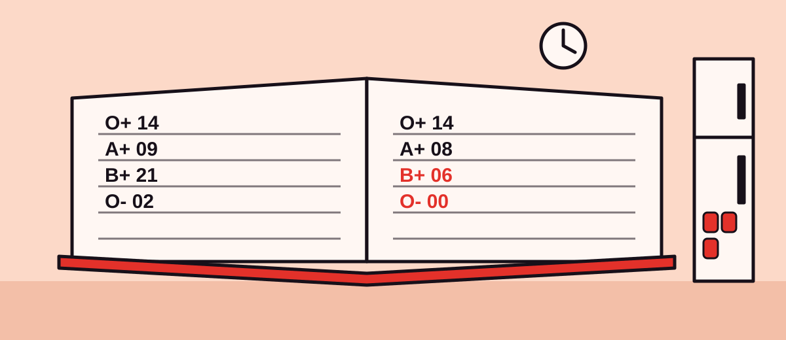

About Hemzo — Gujarat, built on public data
Blood banks publish what is on their shelves, but nobody keeps the history. Hemzo keeps it, watches every district for the slow drift toward a shortage, and says so early enough to act.
{{ st.value }}
{{ st.label }}
Four rules we
refuse to bend
Operating principles
01
Public data, always
Every forecast is traceable to an open feed. If we can't show where a number came from, we don't publish it.
→
02
Honest error bars
Every forecast carries a band and a backtest. If the model cannot beat a naive guess, we ship the naive guess and say so.
→
03
Banks decide, we don't
Hemzo sends a signal and a reason. Transfers, consent and custody stay entirely with the licensed bank.
→
04
No donor data, ever
We model units, districts and dates. Not people. There is no donor identity in any Hemzo system.
→
How we got here
A scraper, a schedule, and patience: the public register changes every few hours, and only a record that is kept can be forecast.

13 Sep 2026
The first snapshot
A scheduled job began saving what eRaktKosh publishes for Gujarat, unmodified, every four hours.
Oct 2026
Forecasts from the archive
The pipeline began rebuilding per-district, per-blood-group forecasts after every snapshot, and testing them against a naive guess.
Oct 2026
This site
The map, forecast pages and risk flags now read that forecast directly.
Today
{{ todayTitle }}
{{ todayBody }}
One builder,
one public dataset
Hemzo is early and small. This is who is behind it.
PM
Parth Madlani
Builder
Work with us
If you run a blood bank, tell us.
Blood banks, district officers and hospital labs: tell us what would help, and which channel you would want flags on. Your district is already on the forecast from public data.
Hemzo — Gujarat
Forecast Index 01